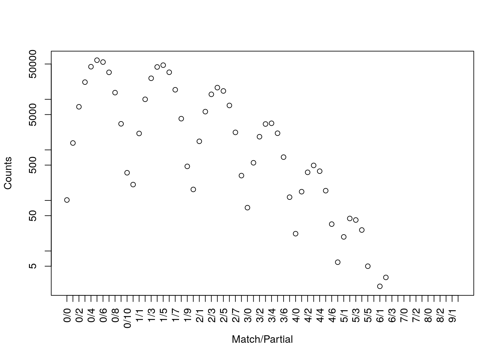
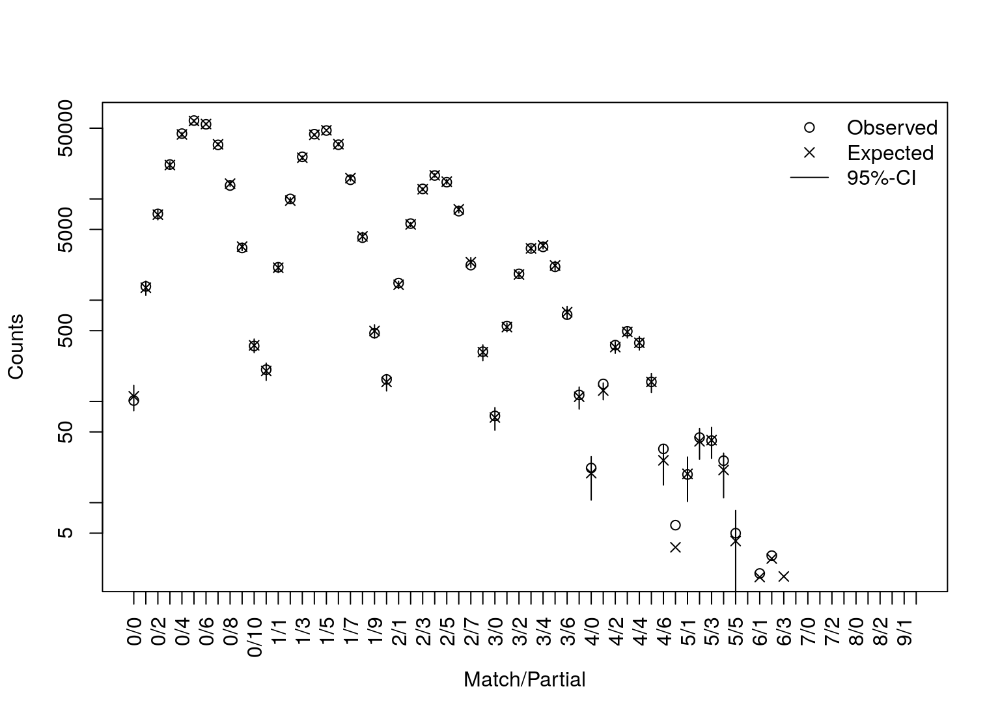
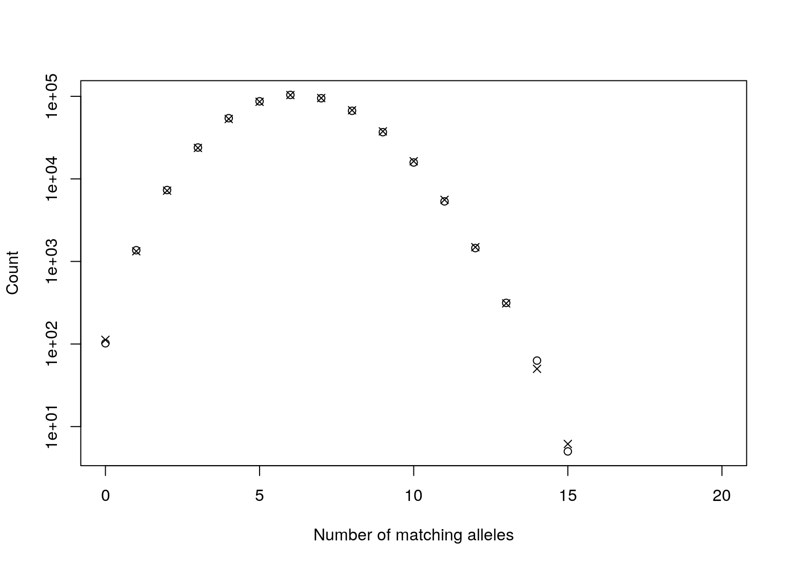
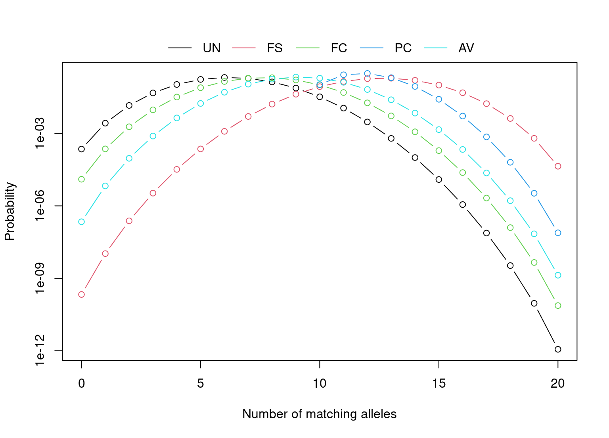

db_vignette.RmdIn 2001, a poster was presented by a forensic scientist from Arizona (Troyer, Gilboy, and Koeneman 2001) at a scientific meeting on human identification. This poster reported a nine locus match between two unrelated men, one white and one black (Kaye 2009). It was not a full match. Both men had been typed at thirteen loci in total, and partially matched at three of the remaining four loci. These partially or non-matching loci would have excluded either man as a suspect if the other was the true offender. However, such a match seemed to be at odds with the random match probabilities. On one hand, these two men were in a DNA database which consisted of approximately 65,000 profiles, and on the other hand, the random match probabilities for the nine locus genotype were 1 in 754 million in Caucasians, 1 in 561 billion in African Americans, and 1 in 113 trillion in Southwest Hispanics, (Troyer, Gilboy, and Koeneman 2001).
As we will show later this is, in effect, an example of the birthday problem and therefore is regarded as completely predictable from a statistical perspective. However, most us who have taught a class on the birthday problem know that our students are initially sceptical.
A pair of profiles is said to (fully) match if every allele at every locus that occurs in one profile occurs in the other. A pair of profiles are said to partially match if there are allelic matches at a subset of loci. Weir (2004) provided a taxonomy for describing partial matches which depends on the number of fully, partial and non-matching loci between a pair of profiles. For any given pair of (full) profiles from the same multiplex there will be: \(m\) loci where both alleles match, \(p\) loci where only one of the alleles matches, and \(L-m-p\) loci where none of the alleles match, where \(L\) is the total number of loci. For example, the profile that Troyer, Gilboy, and Koeneman (2001) found was a 9/3 partial match on 13 loci - nine fully matching loci (\(m=9\)), three partially matching loci (\(p=3\)), and one non-matching locus.
The Troyer-match came from a database matching exercise. In such an exercise every profile is compared with every other profile in the database. This type of comparison exercise is absolutely essential and, in addition, can provide some interesting information about the statistical properties of the population under consideration. We say that database comparison is essential in the first instance for the detection of duplicates. Duplicates may arise in a number of different ways. For example, an offender may provide a false name or an offender’s name may be entered incorrectly. Alternatively, an offender may have an identical twin who is already in the DNA database. There are six pairs of identical twins in the New Zealand National DNA Database (NZDNADB). Forensic scientists are also interested in ‘very close’ matches. For example, a pair of profiles might fully match at nine loci out of ten and partially match at the remaining locus. This may happen either because the donors of the samples are very close relatives. It is more likely, however, that the profiles do not match because of allelic dropout, primer binding site mutations, nomenclature changes or somatic mutation.
Weir (2007) and others (Brenner 2007; Curran, Walsh, and Buckleton 2007; Mueller 2008; Kaye 2009) note that the presence of matching profiles in a DNA database is effectively an instance of the well-known birthday problem (2010) where, in a group of at least 23 randomly chosen people, there is a greater than 50% chance that one pair of them will have the same birthday. Early critics, implicitly calculating the expected number of matches as \(N\pi\), used the wrong value for \(N\) and the wrong value for \(\pi\). Firstly, the number of pairwise matches, not the size of the database, is the relevant quantity. Although the database size is relatively small, the number of pairwise comparisons is very large. The Arizona database contained of \(N=65,493\) profiles (Brenner 2007). Therefore, there are \[ N_\text{Comparisons}=\frac{N(N-1)}{2} = 2,144,633,778 \] or approximately two billion, possible pairwise comparisons.
Secondly, the random match probability is not the probability we need. The random match probability for the pair of profiles in question answers the question “What is the probability that someone other than these two men would have this particular nine locus profile.” The probability we actually want is “What is the probability that two randomly selected profiles would match at nine loci, partially match at three loci, and not match at one locus.” . At a given locus the two profiles may either match (\(m/p=1/0\)), partially match (\(m/p=0/1\)) or mismatch (\(m/p=0/0\)). Weir (2004), Weir (2007) showed that the probabilities of mismatch (\(P_{0/0}\)), partial match (\(P_{0/1}\)) and match (\(P_{1/0}\)) could be expressed by \[\begin{align*} P(\text{Mismatch}) &= P_{0/0} = D^{-1}\{\theta^2(1{-}\theta)(1{-}S_2) + 2\theta(1{-}\theta)^2(1{-}2S_2{+}S_3) + (1{-}\theta)^3(1{-}4S_2{+}4S_3{+}2S_2^2{-}3S_4)\},\\ P(\text{Partial match}) &= P_{0/1} = D^{-1}\{8\theta^2(1{-}\theta)(1{-}S_2) + 4\theta(1{-}\theta)^2(1{-}S_3) + 4(1{-}\theta)^3(S_2{-}S_3{-}S_2^2{+}S_4)\},\\ P(\text{Match}) &= P_{1/0} = D^{-1}\{6\theta^3 + \theta^2(1{-}\theta)(2{+}9S_2) + 2\theta(1{-}\theta)^2(2S_2{+}S_3) + (1{-}\theta)^3(2S_2^2{-}S_4)\}, \end{align*}\] where \(D=(1{+}2\theta)(1{+}\theta)\) and \(S_k=\sum_{i}p_i^k\), with \(p_i\) being the frequency of the \(i\) allele.
Tvedebrink (2010) showed that the overall probability of matching at \(m\) and partially matching at \(p\) loci, \(\pi_{m/p}\), can be calculated by recursion over loci:
\[ \pi^{\ell+1}_{m/p} = \left\{\begin{array}{ll} P^{\ell+1}_{0/0}\pi^\ell_{m/p} + P^{\ell+1}_{0/1}\pi^\ell_{m/p-1} + P^{\ell+1}_{1/0}\pi^\ell_{m-1/p}& m>0~\text{and}~p>0,\\ P^{\ell+1}_{0/0}\pi^\ell_{0/p} + P^{\ell+1}_{0/1}\pi^\ell_{0/p{-}1}&m=0~\text{and}~p>0,\\ P^{\ell+1}_{0/0}\pi^\ell_{m/0} + P^{\ell+1}_{1/0}\pi^\ell_{m{-}1/0}&m>0~\text{and}~p=0\\ P^{\ell+1}_{0/0}\pi^\ell_{0/0}& m=0~\text{and}~p=0, \end{array}\right. \] where the sum of the subscripts for each term on the right hand side equals the subscript on the left hand side, e.g. the subscripts of the last term in the first equation gives \(1/0 + m{-}1/p = m/p\). The initial step of the recursion has \(\pi^1_{1/0} = P^1_{1/0}\), \(\pi^1_{0/1} = P^1_{0/1}\) and \(\pi^1_{0/0} = P^1_{0/0}\).
The coancestry coefficient, \(\theta\) or \(F_{ST}\) models low levels of relatedness between individuals in the same subpopulation, and is typically between 0 and 0.03.
DNAtools
The expected data format of the databases used as input for the functions in DNAtools is a data frame, which is constituted by a column of DNA profile identifiers (the first column) and two columns per typed DNA marker. An example is given below:
| id | D16S539.1 | D16S539.2 | D18S51.1 | D18S51.2 | D19S433.1 | D19S433.2 | D21S11.1 | D21S11.2 |
|---|---|---|---|---|---|---|---|---|
| 1 | 11 | 11 | 15 | 21 | 14 | 14 | 28 | 29 |
| 2 | 13 | 12 | 15 | 14 | 16 | 16 | 29 | 28 |
| 3 | 9 | 9 | 13 | 17 | 14 | 14 | 28 | 27 |
| 4 | 11 | 12 | 14 | 15 | 15 | 13 | 32 | 29 |
| 5 | 12 | 12 | 17 | 12 | 15.2 | 13 | 31.2 | 28 |
| 6 | 9 | 13 | 17 | 14 | 13 | 14 | 30.2 | 28 |
From which we estimate allele frequencies for later use:
allele_freqs <- lapply(1:10, function(x){
al_freq <- table(c(dbExample[[x*2]], dbExample[[1+x*2]]))/(2*nrow(dbExample))
al_freq[sort.list(as.numeric(names(al_freq)))]
})
names(allele_freqs) <- sub("\\.1", "", names(dbExample)[(1:10)*2])We use the example database provided by data(dbExample, package = "DNAtools") to show the usage of the functions of DNAtools.
| 0 | 1 | 2 | 3 | 4 | 5 | 6 | 7 | 8 | 9 | 10 | |
|---|---|---|---|---|---|---|---|---|---|---|---|
| 0 | 102 | 1368 | 7122 | 21878 | 44189 | 59463 | 54601 | 34203 | 13571 | 3281 | 353 |
| 1 | 206 | 2114 | 10013 | 26084 | 43656 | 47418 | 34320 | 15463 | 4145 | 472 | |
| 2 | 165 | 1477 | 5710 | 12566 | 17049 | 14642 | 7570 | 2220 | 310 | ||
| 3 | 72 | 556 | 1821 | 3250 | 3361 | 2135 | 719 | 116 | |||
| 4 | 22 | 149 | 360 | 493 | 379 | 156 | 34 | ||||
| 5 | 6 | 19 | 44 | 41 | 26 | 5 | |||||
| 6 | 0 | 2 | 3 | 0 | 0 | ||||||
| 7 | 0 | 0 | 0 | 0 | |||||||
| 8 | 0 | 0 | 0 | ||||||||
| 9 | 0 | 0 | |||||||||
| 10 | 0 |
The hit argument returns pairs of profiles that fully match at hit (here 6) or more loci.
There is a method for the returned object. Applying this method to yields the dropping ball-picture below. The right end of the distribution is interesting part, due to the larger number of coinciding loci between profile pairs.

By using the dbExpect and dbVariance functions we can compute the expected counts and standard deviations for the number of matching profiles at various levels. Both functions implements the recursions formulae of Tvedebrink et al. (2012), which enables fast and accurate evaluations of the expectations and variances. The dbExpect-function takes the locus-wise allele frequencies and number of profiles as arguments. Furthermore, the \(\theta\)-correction is adjusted for if theta > 0 and adjustment for close relatedness can be done by the k-argument, which is a three-dimensional vector with non-negative entries summing to one (cf. below).
db_expect <- dbExpect(allele_freqs, n = nrow(dbExample), theta = 0, vector = TRUE)
db_sd <- sqrt(diag(dbVariance(allele_freqs, n = nrow(dbExample), theta = 0)))
plot(db_summary)
points(db_expect, pch = 4)
for(x in seq_along(db_sd)) segments(x0 = x, y0 = db_expect[x]-2*db_sd[x], y1 = db_expect[x]+2*db_sd[x])
legend("topright", bty = "n", pch = c(1,4,NA), c("Observed", "Expected", "95%-CI"),
lty = c(NA,NA,1))
Superimposed are the expected counts and associated 95% approximate confidence intervals. The labels of the first axis denote the number of matching and partial-matching loci. The second axis is on a \(\log_{10}\)-scale.
Often it is of interest to look at the number of matching alleles rather than on the number of matching and partial matching loci. As the number of matching alleles is given by \(a = 2m+p\) it is straight forward to look at these instead. The function dbCollapse sums over combinations of \(m\) and \(p\) resulting in \(a\) alleles, for \(a = 0, \dots, 2L\):
a_expect <- dbCollapse(dbExpect(probs = allele_freqs, n = nrow(dbExample)))
a_observed <- dbCollapse(dbCompare(dbExample, trace = FALSE)$m)
plot(seq_along(a_observed)-1, a_observed, log = "y",
xlab = "Number of matching alleles", ylab = "Count")
Warning in xy.coords(x, y, xlabel, ylabel, log): 5 y values <= 0 omitted from
logarithmic plot
points(seq_along(a_expect)-1, a_expect, pch = 4)
The table below lists the k-vector for some typical types of relationsships, where ki is the probability of having i alleles Identical-by-descent (IBD).
| Relationship | Full-siblings (FS) | First-cousins (FC) | Parent-child (PC) | Avuncular (AV) | Unrelated (UN) |
|---|---|---|---|---|---|
| k=(k2,k1,k0) | (0.25, 0.5, 0.25) | (0, 0.25, 0.75) | (0, 1, 0) | (0, 0.5, 0.5) | (0, 0, 1) |
relatives <- list(
UN = dbExpect(probs = allele_freqs, k = c(0,0,1), collapse = TRUE),
FS = dbExpect(probs = allele_freqs, k = c(1,2,1)/4, collapse = TRUE),
FC = dbExpect(probs = allele_freqs, k = c(0,1,3)/4, collapse = TRUE),
PC = dbExpect(probs = allele_freqs, k = c(0,1,0), collapse = TRUE),
AV = dbExpect(probs = allele_freqs, k = c(0,1,1)/2, collapse = TRUE)
)
The function optim.relatedness can be used to estimate the fraction of comparisons between first-cousins, avuncular, parent-child and full-subling relatives in the database.
Brenner, C. 2007. “Arizona DNA Database Matches.” http://dna-view.com/ArizonaMatch.htm.
Curran, JM, SJ Walsh, and J Buckleton. 2007. “Empirical Testing of Estimated DNA Frequencies.” Forensic Science International: Genetics, 1(3-4), 267–272.
Kaye, DH. 2009. “Trawling DNA Databases for Partial Matches: What Is the FBI Afraid of?” Cornell Journal of Law and Public Policy, 19(1).
Mueller, LD. 2008. “Can Simple Population Genetic Models Reconcile Partial Match Frequencies Observed in Large Forensic Databases?” Journal of Genetics, 87(2), 101–108.
Troyer, K, T Gilboy, and B Koeneman. 2001. “A Nine STR Locus Match Between Two Apparently Unrelated Individuals Using AmFlSTR Profiler Plus and Cofiler.” In Genetic Identity Conference Proceedings, 12th International Symposium on Human Identification.
Tvedebrink, T. 2010. “Statistical Aspects of Forensic Genetics – Models for Qualitative and Quantitative STR Data.” Ph.D. thesis, Department of Mathematical Sciences, Aalborg University.
Tvedebrink, T, PS Eriksen, JM Curran, HS Mogensen, and N Morling. 2012. “Analysis of Matches and Partial-Matches in a Danish DNA Reference Profile Data Set.” Forensic Science International: Genetics 6(3), 387-392.
Weir, BS. 2004. “Matching and Partially-Matching DNA Profiles.” Journal of Forensic Sciences, 49(5), 1009–1014.
———. 2007. “The Rarity of DNA Profiles.” The Annals of Applied Statistics, 1(2), 358–370.
2010. “Birthday Problem.” http://en.wikipedia.org/wiki/Birthday_problem.